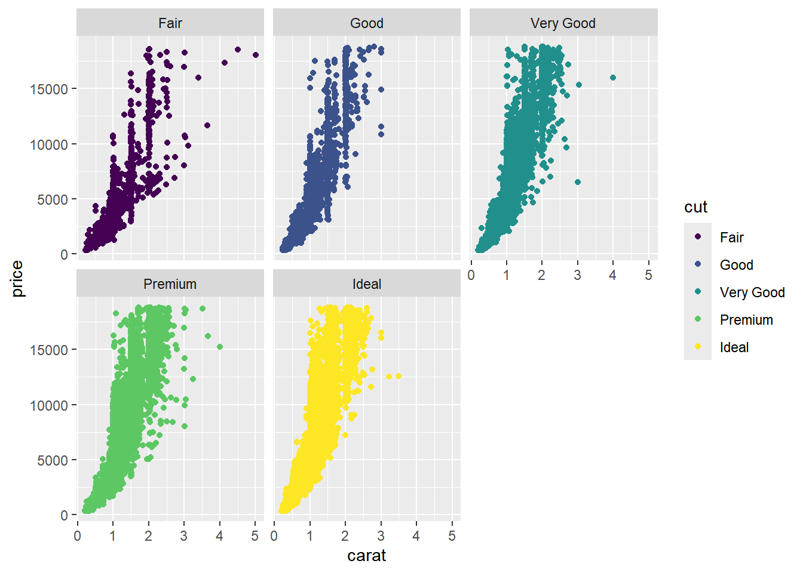
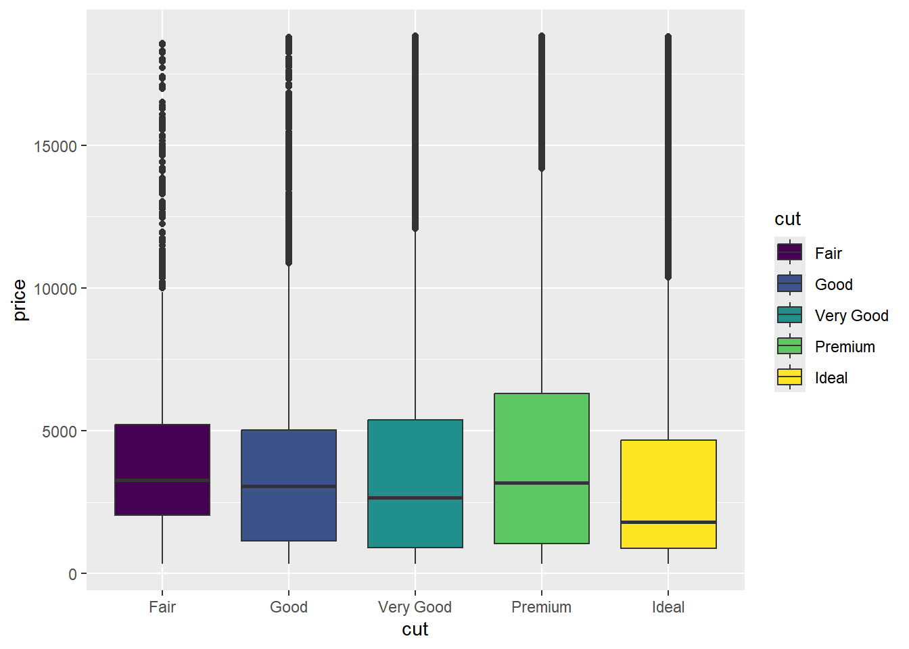
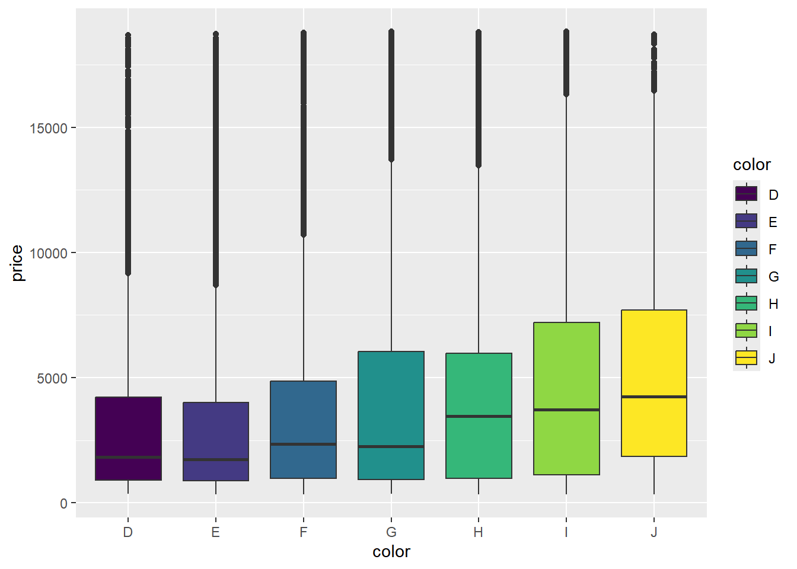
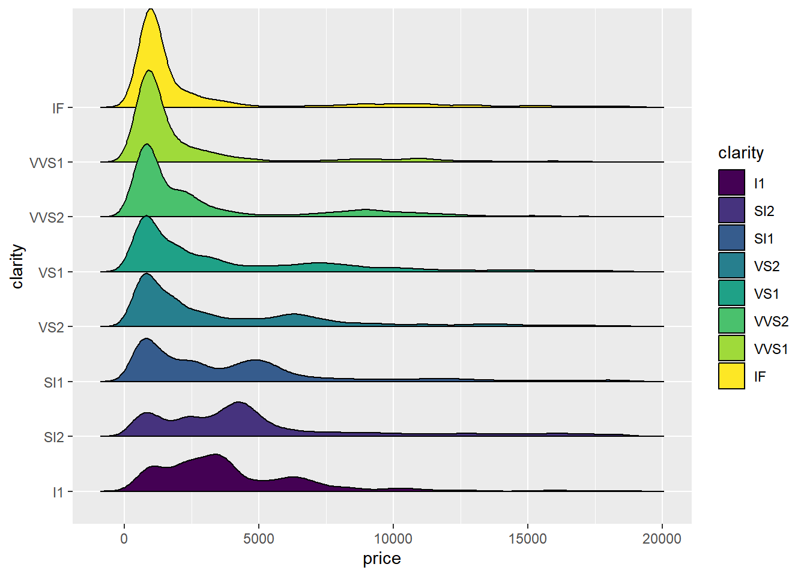

En el capítulo anterior trabajamos las opciones básicas de ggplot para construir gráficas y explorar los datos.1 Esta exploración requiere de unos datos organizados y en este curso trabajaremos con bases de datos estructuradas en formato tidy, donde cada columna es una variable y cada fila es una observación.
1 En realidad, nos preocupamos más del cómo hacer las gráficas que en el por qué y para qué, pero al final de este capítulo estaremos en capacidad de orientar nuestras habilidades para hacer un análisis apropiado de datos
Este capítulo lo vamos a dedicar a explorar las opciones y funcionalidades de dplyr, un paquete que hace parte del tidyverse y que nos va a ayudar a realizar tareas como: transformar variables, reordenar, filtrar, agrupar, crear nuevas variables, renombrar, hacer resúmenes, etc. Al igual que en la construcción de gráficas, hay varias formas de llevar a cabo este tipo de tareas en R pero seguiremos fieles a la filosofía de elegir una de esas herramientas y procurar adquirir rápidamente la fluidez necesaria para aplicarla en el análisis de datos.
Las operaciones de dplyr las podemos clasificar según la forma en que se aplican en la base de datos, distinguiremos los siguientes casos:
Operaciones por filas
Operaciones por columnas
Operaciones por grupos
De forma similar a ggplot, dplyr funciona en forma gramática, lo que significa que escribir y leer el código es más intuitivo, las operaciones se interpretan de izquierda a derecha en lugar de hacerlo de forma anidada en funciones, así que haremos uso extensivo del operador pipe. A diferencia de ggplot, donde solo se usaba este operador para aplicar la función ggplot a una base de datos y luego se agregaban capas con el signo +, en dplyr solo usaremos el operador pipe. dplyr opera sobre bases de datos y devuelve como resultado, bases de datos.
Usaremos la base de datos diamonds, instalada con ggplot2, que contiene 53.940 observaciones y 10 variables. Como siempre, lo mínimo es conocer las variables y unidades en el conjunto de datos, podemos ejecutar ?diamonds o buscar en internet la información necesaria
library(tidyverse)diamonds
# A tibble: 53,940 × 10
carat cut color clarity depth table price x y z
<dbl> <ord> <ord> <ord> <dbl> <dbl> <int> <dbl> <dbl> <dbl>
1 0.23 Ideal E SI2 61.5 55 326 3.95 3.98 2.43
2 0.21 Premium E SI1 59.8 61 326 3.89 3.84 2.31
3 0.23 Good E VS1 56.9 65 327 4.05 4.07 2.31
4 0.29 Premium I VS2 62.4 58 334 4.2 4.23 2.63
5 0.31 Good J SI2 63.3 58 335 4.34 4.35 2.75
6 0.24 Very Good J VVS2 62.8 57 336 3.94 3.96 2.48
7 0.24 Very Good I VVS1 62.3 57 336 3.95 3.98 2.47
8 0.26 Very Good H SI1 61.9 55 337 4.07 4.11 2.53
9 0.22 Fair E VS2 65.1 61 337 3.87 3.78 2.49
10 0.23 Very Good H VS1 59.4 61 338 4 4.05 2.39
# ℹ 53,930 more rows
Realice algunas gráficas para explorar relaciones básicas entre algunas de las variables
diamonds |>ggplot(aes(x = carat, y = price, color = cut)) +geom_point() +facet_wrap(facets =~cut)

diamonds |>ggplot(aes(x = cut, y = price, fill = cut)) +geom_boxplot()

diamonds |>ggplot(aes(x = color, y = price, fill = color)) +geom_boxplot()

library(ggridges)diamonds |>ggplot(aes(x = price, y = clarity, fill = clarity)) +geom_density_ridges2()

3.1 Operaciones sobre filas
Nada que agregar, son operaciones o funciones que modifican de alguna forma las filas u observaciones en la base de datos. Dentro de estas funciones tenemos operaciones como filtrar y ordenar. Las funciones principales en este grupo son:
arrange(): Ordena las filas de forma ascendente o descendente para valores de una o más variables
filter(): Selecciona o filtra los datos que cumplen una o más condiciones
distinct(): Selecciona valores únicos
Podemos ordenar las filas en diamonds en orden ascendente o descendente según el precio, o cualquier otra variable numérica
diamonds |>arrange(price)
# A tibble: 53,940 × 10
carat cut color clarity depth table price x y z
<dbl> <ord> <ord> <ord> <dbl> <dbl> <int> <dbl> <dbl> <dbl>
1 0.23 Ideal E SI2 61.5 55 326 3.95 3.98 2.43
2 0.21 Premium E SI1 59.8 61 326 3.89 3.84 2.31
3 0.23 Good E VS1 56.9 65 327 4.05 4.07 2.31
4 0.29 Premium I VS2 62.4 58 334 4.2 4.23 2.63
5 0.31 Good J SI2 63.3 58 335 4.34 4.35 2.75
6 0.24 Very Good J VVS2 62.8 57 336 3.94 3.96 2.48
7 0.24 Very Good I VVS1 62.3 57 336 3.95 3.98 2.47
8 0.26 Very Good H SI1 61.9 55 337 4.07 4.11 2.53
9 0.22 Fair E VS2 65.1 61 337 3.87 3.78 2.49
10 0.23 Very Good H VS1 59.4 61 338 4 4.05 2.39
# ℹ 53,930 more rows
diamonds |>arrange(desc(price))
# A tibble: 53,940 × 10
carat cut color clarity depth table price x y z
<dbl> <ord> <ord> <ord> <dbl> <dbl> <int> <dbl> <dbl> <dbl>
1 2.29 Premium I VS2 60.8 60 18823 8.5 8.47 5.16
2 2 Very Good G SI1 63.5 56 18818 7.9 7.97 5.04
3 1.51 Ideal G IF 61.7 55 18806 7.37 7.41 4.56
4 2.07 Ideal G SI2 62.5 55 18804 8.2 8.13 5.11
5 2 Very Good H SI1 62.8 57 18803 7.95 8 5.01
6 2.29 Premium I SI1 61.8 59 18797 8.52 8.45 5.24
7 2.04 Premium H SI1 58.1 60 18795 8.37 8.28 4.84
8 2 Premium I VS1 60.8 59 18795 8.13 8.02 4.91
9 1.71 Premium F VS2 62.3 59 18791 7.57 7.53 4.7
10 2.15 Ideal G SI2 62.6 54 18791 8.29 8.35 5.21
# ℹ 53,930 more rows
Si queremos ver los valores únicos de las variables que son categóricas2 (cut, color y clarity) podemos usar distinct(cat1) o combinaciones únicas de varias de ellas con distinct(fact1, fact2)
2 No tiene mucho sentido hacerlo para variables continuas
diamonds |>distinct(cut)
# A tibble: 5 × 1
cut
<ord>
1 Ideal
2 Premium
3 Good
4 Very Good
5 Fair
# A tibble: 56 × 2
color clarity
<ord> <ord>
1 D IF
2 D VVS1
3 D VVS2
4 D VS1
5 D VS2
6 D SI1
7 D SI2
8 D I1
9 E IF
10 E VVS1
# ℹ 46 more rows
Note que en el último código, luego de captar las combinaciones únicas de color y clarity, se ordenan los datos de forma ascendente para color y para valores repetidos de color se ordenan de forma descendente para clarity.
La base de datos diamonds es un tibble. Un tibble es un data.frame pero con algunas características especiales. Su principal diferencia con un data.frame es que al momento de imprimir la base de datos, no se imprimen todos los datos sino solo las primeras 10 observaciones, algo bastante bueno si se está trabajando con bases de datos con muchas observaciones. Si deseamos imprimir todas las observaciones o una cantidad determinada de ellas, debemos solicitarlo3
3 Omitimos la salida para facilitar la lectura del documento
print(diamonds, n =20)diamonds |>distinct(color, clarity) |>arrange(color, desc(clarity)) |>print(n =56) # todas (mejórelo)
filter() es quizás, la función más usada en filas. Nos permite seleccionar un subconjunto de los datos que cumplen uno o más criterios. La función requiere una base de datos como primer argumento y luego una serie de condiciones sobre los valores de una o más variables. Estas condiciones deben devolver un vector de valores lógicos que indicarán las filas a seleccionar.
Es buen momento para recordar algunas operaciones con valores lógicos en R. Los valores lógicos son TRUE y FALSE o T y F. Podemos obtener estos valores al comparar con: >, >=, <, <=, ==, !=
2==5# FALSE
[1] FALSE
3>=0# TRUE
[1] TRUE
2<-3# FALSE
[1] FALSE
3!=6# TRUE
[1] TRUE
El operador “o” es |, el operador “y” es &, el
(2>0) & (10>20) # TRUE y FALSE es FALSE
[1] FALSE
(2>0) | (10>20) # TRUE o FALSE es TRUE
[1] TRUE
Claramente, estas operaciones se pueden aplicar sobre vectores
c(2,6,9,3) >=5
[1] FALSE TRUE TRUE FALSE
(c(7, 2, 9, 3, 1) <4) & (c(1, 2, 8, 2, 0))
[1] FALSE TRUE FALSE TRUE FALSE
Como se mencionó, el primer argumento en dplyr es una base de datos, y podemos pensar lo siguiente como un vector de valores lógicos donde se debe tener un valor de TRUE en cada posición que se quiera filtrar o extraer. Para entender con claridad el funcionamiento de filter(), vamos a crear una pequeña base de datos
# A tibble: 10 × 3
var1 var2 var3
<chr> <dbl> <dbl>
1 c 6.83 0.890
2 c 4.81 0.693
3 c 5.71 0.641
4 b 5.29 0.994
5 c 3.41 0.656
6 b 6.60 0.709
7 b 3.98 0.544
8 b 3.17 0.594
9 c 4.31 0.289
10 a 6.82 0.147
Supongamos que, de estas 10 filas, queremos seleccionar o filtrar la fila 1 y 4.
data_prueba |>filter(c(T,F,F,T,F,F,F,F,F,F))
# A tibble: 2 × 3
var1 var2 var3
<chr> <dbl> <dbl>
1 c 6.83 0.890
2 b 5.29 0.994
Esta es la forma en que opera filter(), aunque el vector de valores lógicos será resultado de algunas condiciones sobre los valores de las variables. Supongamos que queremos filtrar aquellos datos o filas en los que el valor de var3 es mayor a 0.7, lo que debemos escribir es
data_prueba |>filter(var3 >0.7)
# A tibble: 3 × 3
var1 var2 var3
<chr> <dbl> <dbl>
1 c 6.83 0.890
2 b 5.29 0.994
3 b 6.60 0.709
Podemos usar tantas combinaciones o condiciones como se requieran sobre las variables. En el siguiente ejemplo, filtramos los datos para los que var1 tiene el valor “c” y var3 es menor que 0.65
data_prueba |>filter(var1 =="c"& var3 <0.65)
# A tibble: 2 × 3
var1 var2 var3
<chr> <dbl> <dbl>
1 c 5.71 0.641
2 c 4.31 0.289
Volvamos a trabajar con diamonds, para recordar sus variables volvamos a imprimir los nombres de las columnas
# A tibble: 1,069 × 10
carat cut color clarity depth table price x y z
<dbl> <ord> <ord> <ord> <dbl> <dbl> <int> <dbl> <dbl> <dbl>
1 2.29 Premium I VS2 60.8 60 18823 8.5 8.47 5.16
2 2 Very Good G SI1 63.5 56 18818 7.9 7.97 5.04
3 1.51 Ideal G IF 61.7 55 18806 7.37 7.41 4.56
4 2.07 Ideal G SI2 62.5 55 18804 8.2 8.13 5.11
5 2 Very Good H SI1 62.8 57 18803 7.95 8 5.01
6 2.29 Premium I SI1 61.8 59 18797 8.52 8.45 5.24
7 2.04 Premium H SI1 58.1 60 18795 8.37 8.28 4.84
8 2 Premium I VS1 60.8 59 18795 8.13 8.02 4.91
9 1.71 Premium F VS2 62.3 59 18791 7.57 7.53 4.7
10 2.15 Ideal G SI2 62.6 54 18791 8.29 8.35 5.21
# ℹ 1,059 more rows
Al pasar las condiciones con las que queremos filtrar los datos, el operador & puede ser reemplazado por una , o dicho de otra forma, las condiciones separadas por , se interpretarán como &.
Si queremos seleccionar los diamantes que tienen el atributo clarity más pobre (los 3 peores): “I1”, “SI2”, “SI1”
# A tibble: 23,000 × 10
carat cut color clarity depth table price x y z
<dbl> <ord> <ord> <ord> <dbl> <dbl> <int> <dbl> <dbl> <dbl>
1 0.23 Ideal E SI2 61.5 55 326 3.95 3.98 2.43
2 0.21 Premium E SI1 59.8 61 326 3.89 3.84 2.31
3 0.31 Good J SI2 63.3 58 335 4.34 4.35 2.75
4 0.26 Very Good H SI1 61.9 55 337 4.07 4.11 2.53
5 0.3 Good J SI1 64 55 339 4.25 4.28 2.73
6 0.22 Premium F SI1 60.4 61 342 3.88 3.84 2.33
7 0.31 Ideal J SI2 62.2 54 344 4.35 4.37 2.71
8 0.2 Premium E SI2 60.2 62 345 3.79 3.75 2.27
9 0.32 Premium E I1 60.9 58 345 4.38 4.42 2.68
10 0.3 Ideal I SI2 62 54 348 4.31 4.34 2.68
# ℹ 22,990 more rows
Cuando estamos evaluando la condición de que una variable tome alguno entre 2 o más valores, es más sencillo usar var %in% c(valor1, ..., valorn) en lugar de var == valor1 | var == "valor2" | ... var == "valorn". El siguiente código hace la misma operación que el anterior